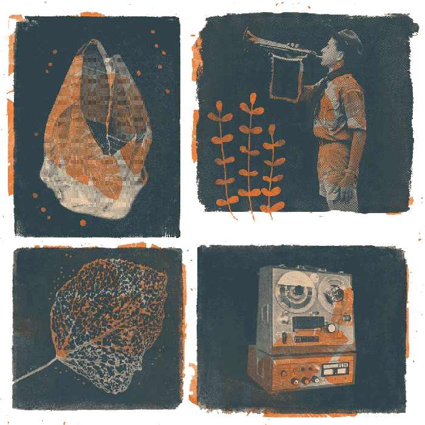

  <section id="split" class="mw-100 ma3-ns cf pt5-l pt4">

    <div id="artwork" class="w-50-l fl-l fixed-l">

      

    </div>

    <div id="copy" class="w-40-l fr f4 pt5-ns pt4">

      

      <p class="lh-copy ph3 pt3">


      {{ page.homepage-text-1 }}
      <br />
      <br />
      {{ page.homepage-text-2 }}
      <br />
      <br />
      {{ page.homepage-text-3 }}

      </p>


      <footer id="home-footer" class="mt5">


        <div class="fl w-100">

          <p class="f6 courier gray ph3-l ph3-m ph1 pt5-l pt3">
            <a class="black-80" href="https://www.facebook.com/noncanon555/">Facebook</a> <a class="black-80" href="https://twitter.com/noncanon555?lang=en">Twitter</a> <a class="black-80" href="mailto:noncanon555@gmail.com">Email</a>
          </p>

        </div>

        <div class="fr w-80-l w-100">

          <p class="f6 courier gray ph3-l ph3-m ph2 pt5-l pt3">
            Copyright {{ 'now' | date: "%Y" }}, Non Canon
          </p>

        </div>

        <div class="fl w-20 tl pt4-ns pt6 mt3">

          


        </div>


    </div>

    </footer>


  </section>


